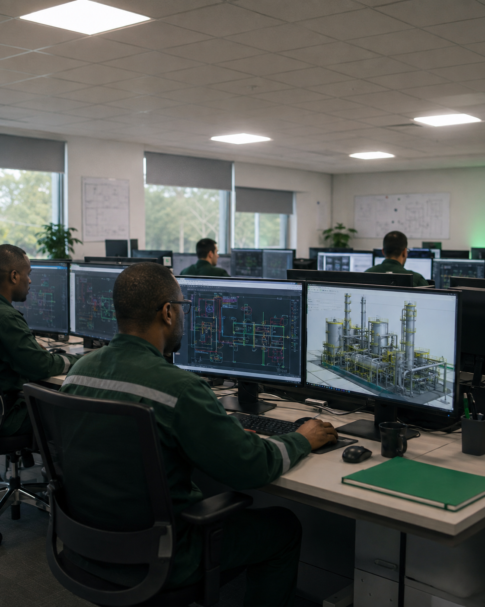
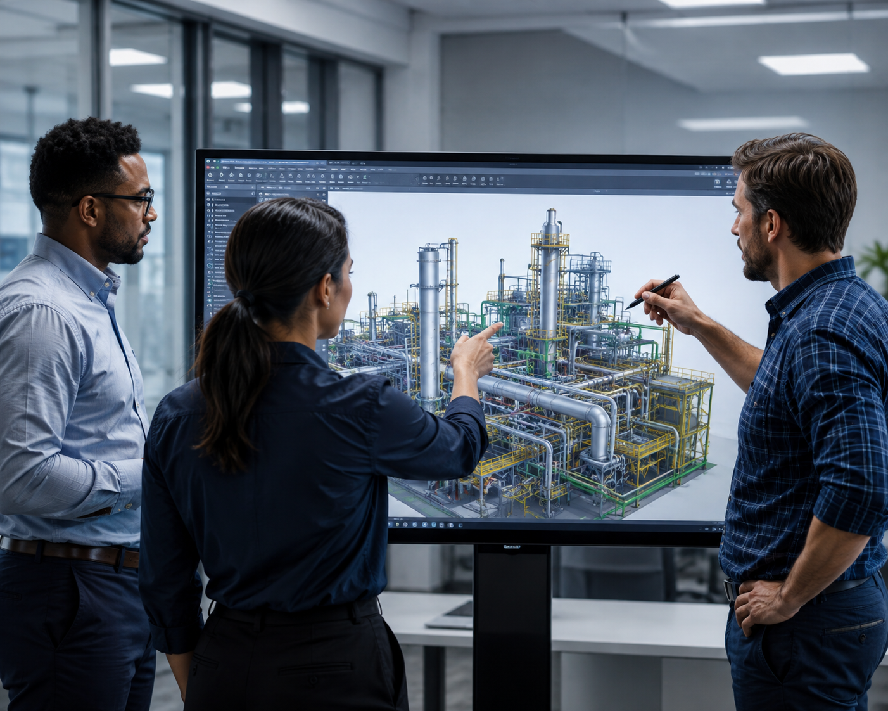
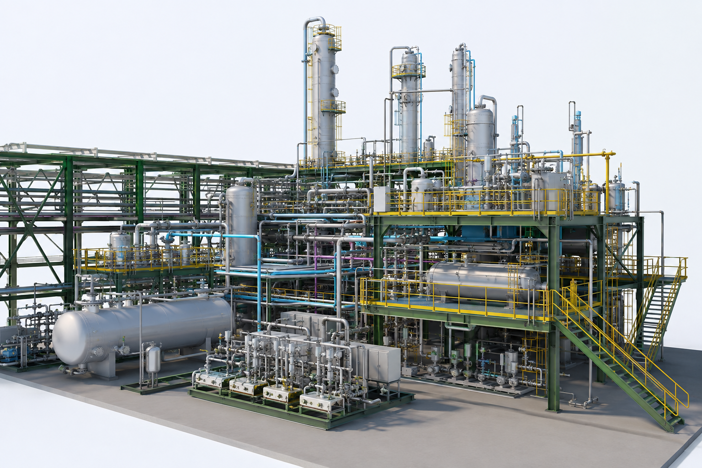

Full project lifecycle
Support from feasibility and concept selection through FEED, detailed design, construction and as-built documentation.
Concept to construction. Engineered in Nigeria.
Decisions taken at the design stage govern what a facility costs to build and what it costs to run for the next twenty years. AOS Orwell provides multi-discipline engineering design across the full project lifecycle, from feasibility and concept selection through FEED to issued-for-construction deliverables—supported by an operations and maintenance business that keeps our designs grounded in how plants actually run.

Wide shot of AOS Orwell engineers at multi-monitor CAD workstations, photographed from behind at a low angle.
Multi-discipline engineering supported by operational experience.
Our engineering teams support projects from the earliest investment and development decisions through design, procurement, fabrication, construction, commissioning and as-built handover. The result is a coordinated design that responds to technical, commercial, construction and whole-life operating requirements.
Support from feasibility and concept selection through FEED, detailed design, construction and as-built documentation.
Coordinated process, mechanical, piping, civil, structural, electrical, instrumentation and safety engineering.
Designs informed by real maintenance, access, sparing, isolation and equipment-performance experience.
Coordinated engineering disciplines, industry-standard platforms and controlled review processes support designs that are technically sound, constructable and maintainable.
Our engineering design capability spans the disciplines required to take a facility from concept to construction: process, mechanical, piping, civil and structural, electrical, instrumentation and control, and safety engineering. Teams work to client specifications and recognised international codes, with deliverables produced on industry-standard engineering platforms and controlled through a formal review and approval process. Because AOS Orwell also operates and maintains producing assets, our designs are tested against the discipline most engineering houses never see—the maintainability, sparing and access realities that determine whole-life cost.

Two or three AOS Orwell engineers around a large screen during a collaborative 3D model review.
Define the opportunity, test the options and understand the technical and commercial risk before major project commitments are made.
The cheapest place to change a project is on paper. Feasibility and FEED are where scope is defined, options are tested and the cost of the entire development is effectively set—and where the greatest value is either captured or lost. AOS Orwell delivers feasibility studies that screen technical and commercial options against a client’s investment criteria, and Front End Engineering Design that converts a selected concept into a frozen, costed and executable scope. The output is a design basis robust enough to support a final investment decision and clear enough to tender competitively, with technical risk understood and priced before commitment.
Participants engaged around P&IDs during a formal design review or HAZOP session.
Evaluate development options and identify the concept that best satisfies technical, commercial and operational requirements.
Convert the selected concept into a coordinated, costed and executable scope suitable for investment approval and competitive tendering.
Detailed design is where a frozen scope becomes something a contractor can build. AOS Orwell produces the full issued-for-construction deliverable set— drawings, models, specifications, datasheets and material take-offs—engineered to be constructable, procurable and maintainable. Multi-discipline work is coordinated through a controlled 3D model with clash resolution, and vendor data is integrated as equipment is purchased so the design reflects what is actually being installed. We carry the design through procurement, fabrication and construction support to as-built handover, which means the team that specified the plant remains accountable for it through commissioning.

Use an original project model or approved engineering-model screenshot.
Use the completed installation corresponding with the adjacent 3D engineering model.
An engineer in AOS Orwell PPE at a live facility, preferably one of the company’s operations and maintenance assets.
Most engineering houses hand over at the end of detailed design. We do not. AOS Orwell operates and maintains producing facilities, which means our designers are held to account by colleagues who will later have to maintain what they specified. That feedback loop shows up in access, sparing, isolation philosophy and equipment selection—the details that separate a plant that runs from a plant that is merely technically correct. Our capability is resourced in-country and engineered to the standards our clients answer to.
Share your feasibility, FEED, detailed-engineering, brownfield-modification or technical-assurance requirements with our engineering team.